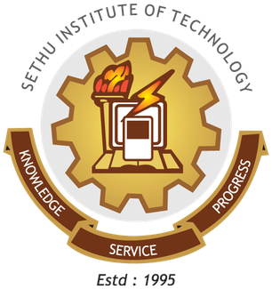

| Sethu Institute of Technology was started 1995 by the Sethu Educational Trust, sponsored by a committee of academicians led by educationist Thiru. S.Mohamed Jaleel. The college is approved by the All India Council for Technical Education, New Delhi, Accreditation by National Board of Accreditation, New Delhi and is affiliated to Anna University, Chennai. It offers Bachelors programmes in eight disciplines and seven Masters programme. The college is awarded autonomous status in the year 2012 by AICTE and it was confirmed by Anna University, Chennai in 2014 |
 |